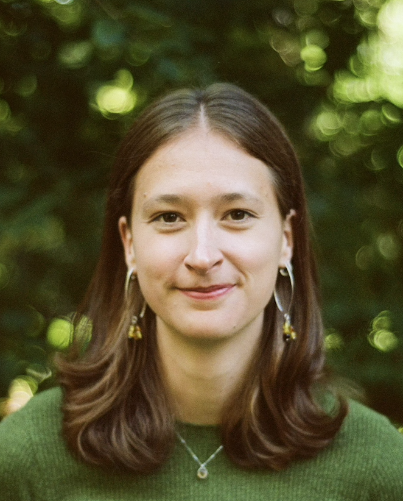

I am a Postdoctoral Researcher at the Oxford Martin AI Governance Initiative and a Stipendiary Lecturer in Mathematics at St. Hugh's College. Previously, I obtained my DPhil in Mathematics at the University of Oxford under the supervision of Christina Goldschmidt, where my thesis was in probability theory and more specifically random graphs with temporal structure.
Feel free to reach out!